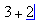
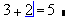

Evaluating an Expression |
To make a simple numerical calculation:
Click anywhere in your worksheet and type the expression you want to evaluate.

Press = to display the equal sign for evaluation.

When you press =, a placeholder appears to the right of the evaluation. This is the unit placeholder, which is only visible when you click on the equation. You can evaluate a function in much the same way.
Expressions are evaluated in a left-right, top-down order. All expressions immediately update as you make changes, provided you are in Automatic Calculation mode. Make sure any variables you use in the expression to the left of the equals sign are not marked in red. If you have errors, trace them and/or fix them. You may wish to adjust the result display to show greater precision or a different numerical format.
If you need to evaluate an expression or function repeatedly, you can use a range variable or a vector. You can store results by writing them to a file, or copying and pasting them.
| Equal Signs |
The expression above uses an evaluation equal sign. There are five fundamentally different types of equal signs in Mathcad. These are:
The evaluation equal sign: numerical evaluation of x.
The assignment equal sign: x is assigned the value in y. Defines variables rather than evaluating them.
The Boolean equal sign: does a = b?
The global equal sign: x is assigned the value in y before other evaluations in the worksheet, regardless of the position of the region.
The symbolic equal sign: returns algebraic evaluation of your expression. If names are assigned to numeric values or functions, these are substituted into the symbolic expression. Values can be viewed in place before numeric reduction using the explicit keyword. Numeric evaluation can be chained with symbolic evaluation.